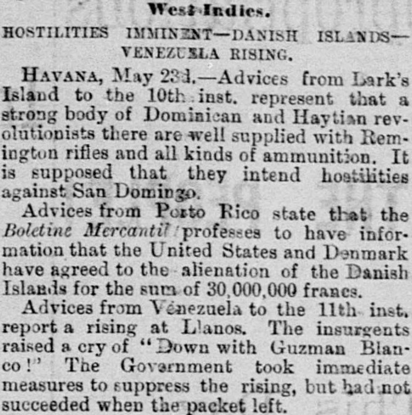
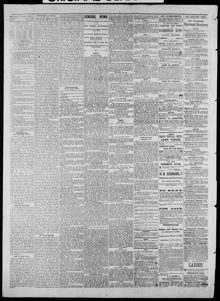

Havana, May 2M.— Advices from Lark's Island to the 10th instLa Habana, 24 de mayo.— Noticias de Lark's Island hasta el 10 del corriente
Sacramento Daily Record-Union. Sacramento [Calif.], May 24, 1881. Page 2. Published by Sacramento Pub. Co., 1875-[1891]. A daily newspaper, 1875–1891.Sacramento Daily Record-Union. Sacramento [Calif.], 24 de mayo de 1881. Página 2. Publicado por Sacramento Pub. Co., 1875-[1891]. Periódico diario, 1875–1891. View the originalVer el original


See the full pageVer la página completaBased on advices from Turk's Island to May 10th, the newspaper reported that a strong body of Dominican and Haytian revolutionists were well supplied with Remington rifles and ammunition, with the supposition that they intended hostilities. Additionally, advices from Porto Rico stated that the Union Mercantil professed to have information that the United States and Denmark had agreed to alienate the Danish Islands for 30,000,000 francs.Conforme a noticias remitidas desde las islas Turcas hasta el 10 de mayo, el periódico dio cuenta de que una nutrida partida de insurrectos dominicanos y haitianos se hallaba bien pertrechada de fusiles Remington y parque, conjeturándose que fraguaban hostilidades inmediatas. Comunicaciones de Puerto Rico aseguraban paralelamente que La Unión Mercantil aseveraba conocer un concierto secreto entre los Estados Unidos y Dinamarca para ceder las Antillas Danesas por 30.000.000 de francos.
FULL TEXT:TEXTO COMPLETO:
West Indies.Indias Occidentales.
HOSTILITIES IMMINENT--DANISH ISLANDS--VENEZUELA RISING.HOSTILIDADES INMINENTES—ISLAS DANESAS—VENEZUELA LEVANTÁNDOSE.
HAVANA, May 23d.--Advices from Turk's Island to the 10th inst. represent that a strong body of Dominican and Haytian revolutionists there are well supplied with Remington rifles and all kinds of ammunition. It is supposed that they intend hostilities against San Domingo.LA HABANA, 23 de mayo.—Noticias de la Isla Turca hasta el 10 del corriente representan que un fuerte cuerpo de revolucionarios dominicanos y haitianos allí está bien provisto de rifles Remington y toda clase de municiones. Se supone que intentan hostilidades contra Santo Domingo.
Advices from Porto Rico state that the Boletino Mercantil professes to have information that the United States and Denmark have agreed to the alienation of the Danish Islands for the sum of 30,000,000 francs.Noticias de Puerto Rico declaran que el Boletino Mercantil profesa tener información de que los Estados Unidos y Dinamarca han acordado la enajenación de las Islas Danesas por la suma de 30,000,000 de francos.
This collection gathers the coverage of the Dominican Republic in the American press, in the order it was published.Esta colección reúne la cobertura de la República Dominicana en la prensa estadounidense, en el orden en que se publicaron.